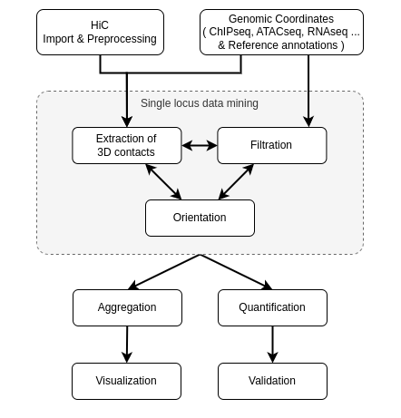

This package provides a set of functions useful in the analysis of 3D genomic interactions. It includes the import of standard HiC data formats into R and HiC normalisation procedures. The main objective of this package is to improve the visualization and quantification of the analysis of HiC contacts through aggregation.

Installation
Development version is avalaible from GitHub:
remotes::install_github("CuvierLab/HicAggR")